Группа компаний Урбантех
Задача
Ребрендинг без сильных изменений с сохранением идеи логотипа и духа компании.
Проблема
Логотип был устаревшим во всём: начиная от форм, заканчивая цветовыми решениями.
Решение
Грубые формы были сглажены, цветовая палитра стала глубже. Логотип стал более дружелюбным для пользователей. Так же был запрос на несколько позиций мерча.
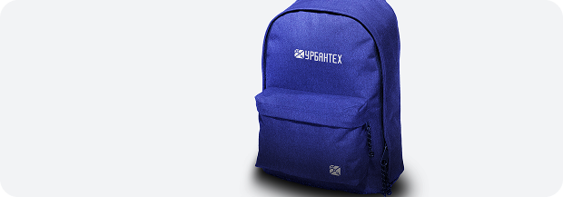
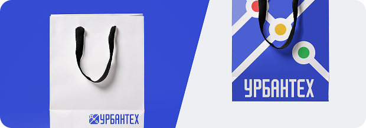
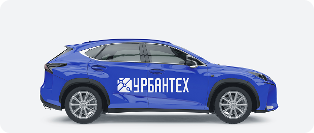
Поддержание визуального языка Yappy
в выездных мероприятиях
Форум ПМЭФ
Чтобы поддержать стиль диджитал-продукта, была придумана инсталляция с подиумом в виде ноутбука, на котором показывались видео авторов Yappy в самом приложении и продукты компаний-партнёров.
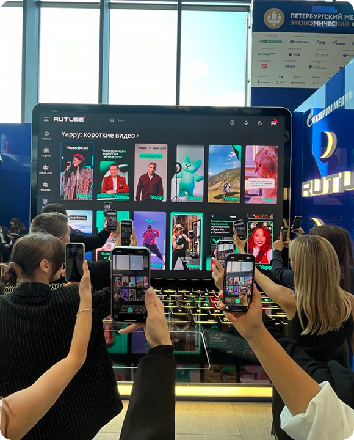
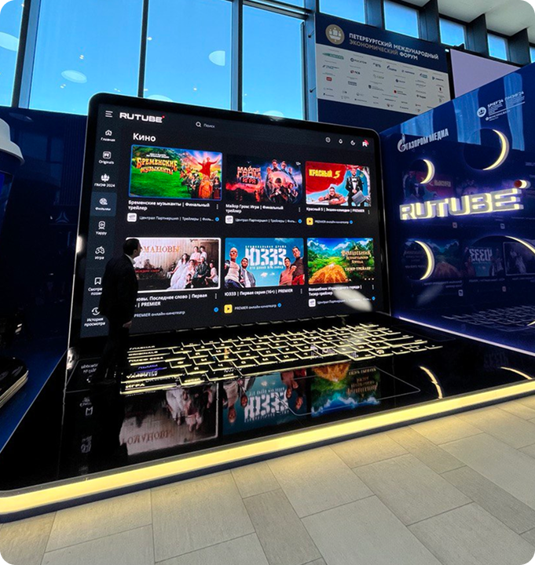
Музыкальный фестиваль Дикая Мята
Музыкальный лейбл Yappy Music ежегодно участвовал в этом фестивале. Ниже представлена застройка 2024 года. Было сделано множество игровых и зон отдыха. Наш стенд был одним из самых посещаемых за оба дня фестиваля.
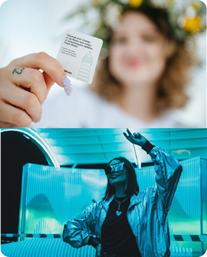
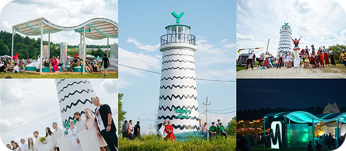
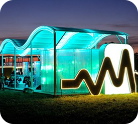
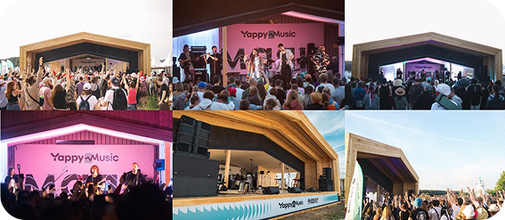
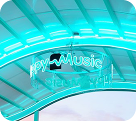
Гонка Шёлковый Путь
«Шёлковый путь» — это международный ралли-марафон, проводимый с 2009 года на территории России. Был разработан дизайн для гоночной машины, которая участвовала в этом ралли в 2024 году.
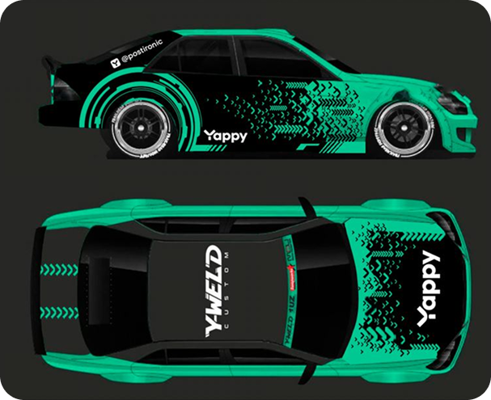
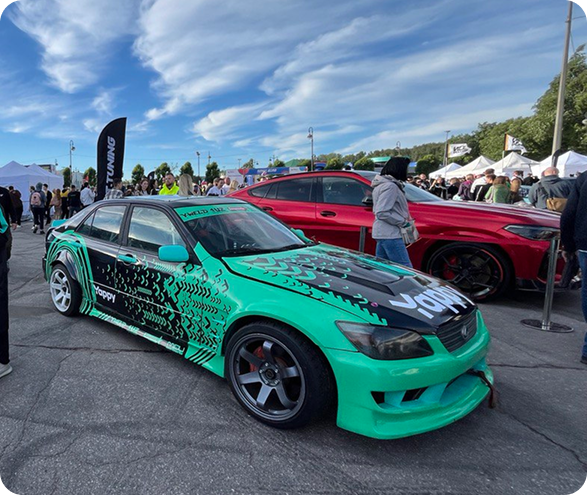
Визуальный ряд на концертах артистов и застройка сцен
В рамках музыкального лейбла Yappy Music было оформлено несколько застроек сцен для артистов Эри и Маша Мирова.
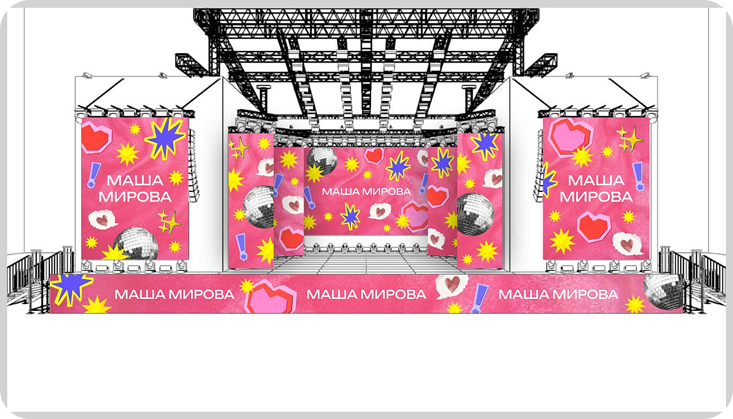
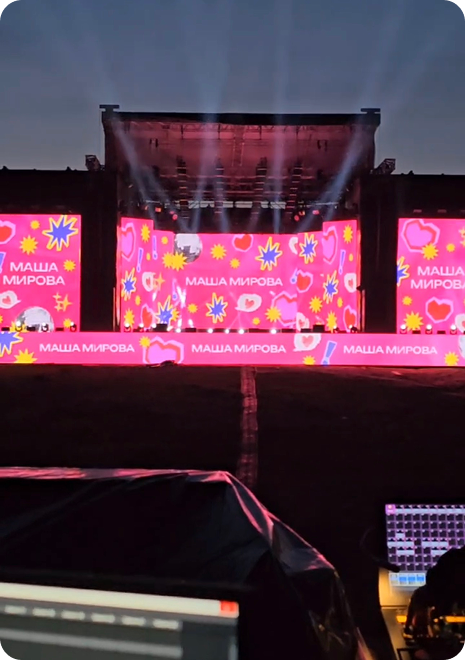
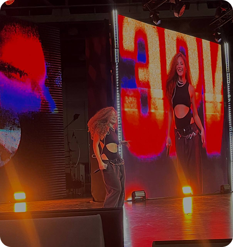
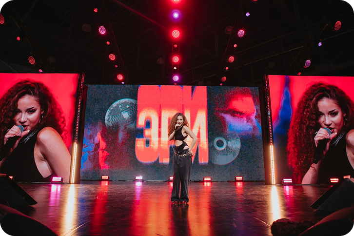
Визуальный ряд для медиафасада Гидропроект
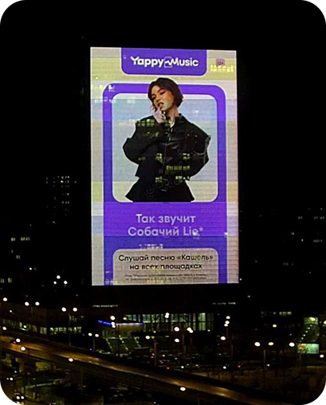
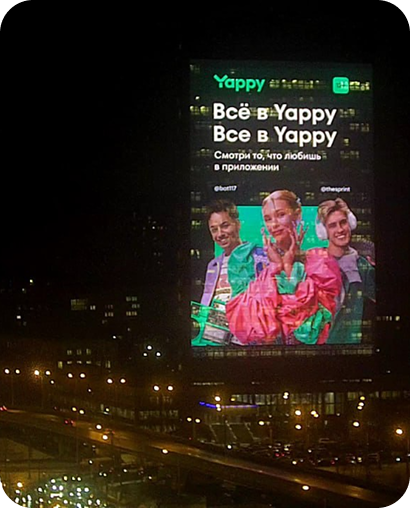
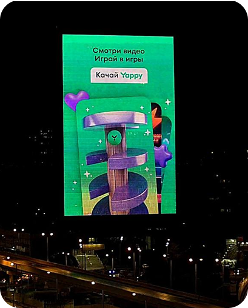